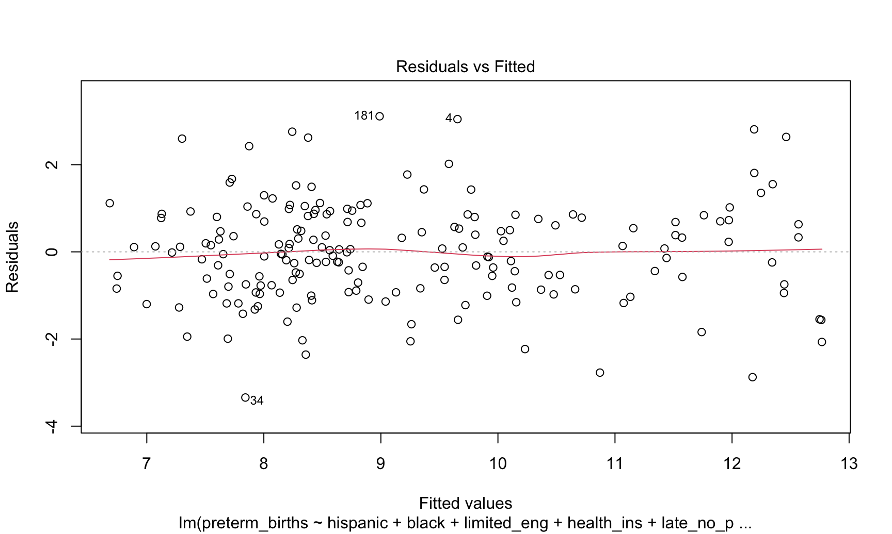
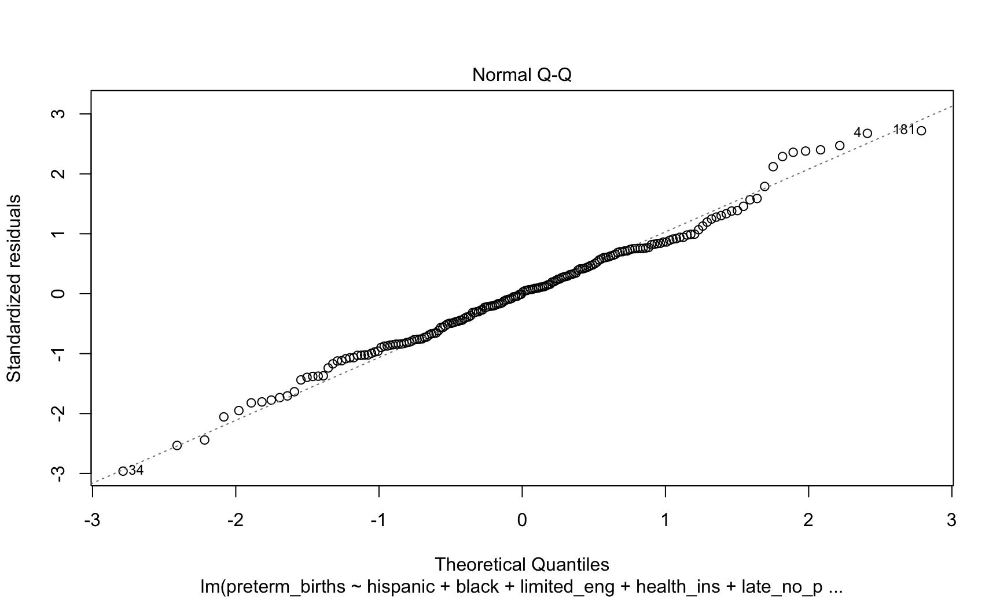
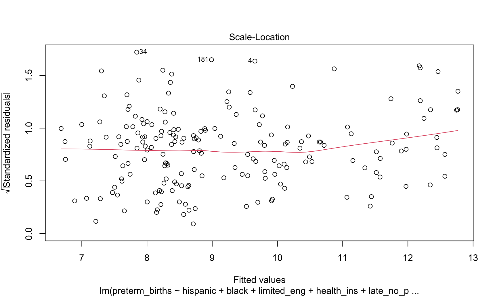
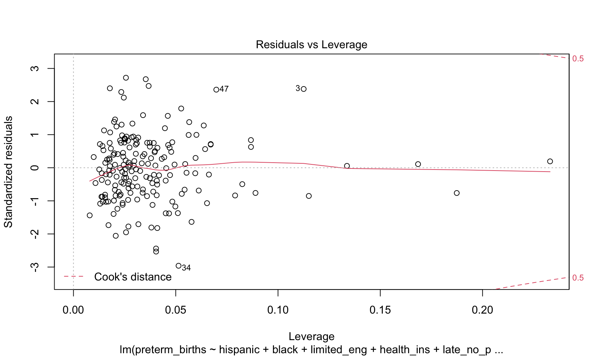

Let’s start by fitting a linear model to the preterm births outcome using a stepwise selection process (with AIC as metric). Next, we’ll take a look at the chosen predictors, effect measures, and run regression diagnostics of our converged model.
#read in cleaned csv files
predictors_df = read.csv("./data/predictors.csv")
outcome_df = read.csv("./data/outcomes.csv")
#Combined predictors with preterm births outcome
preterm_linear_df = predictors_df %>%
mutate(preterm_births = outcome_df$preterm_births)
#Fit the full model
full_preterm_linear.model <- lm(preterm_births~., data = preterm_linear_df)
#Stepwise regression model
step_preterm_linear.model <- stepAIC(full_preterm_linear.model, direction = "both",
trace = FALSE)
#Display converged model
step_preterm_linear.model %>%
broom::tidy() %>%
knitr::kable(digits = 3)| term | estimate | std.error | statistic | p.value |
|---|---|---|---|---|
| (Intercept) | 3.010 | 2.446 | 1.230 | 0.220 |
| hispanic | 0.017 | 0.006 | 2.926 | 0.004 |
| black | 0.045 | 0.006 | 7.265 | 0.000 |
| limited_eng | -0.022 | 0.010 | -2.170 | 0.031 |
| health_ins | 0.054 | 0.025 | 2.136 | 0.034 |
| late_no_prenatal_care | 0.089 | 0.042 | 2.104 | 0.037 |
| non_pcmd_density | -0.002 | 0.001 | -1.519 | 0.131 |
The 6 variables hispanic, black, limited_eng, health_ins, late_no_prenatal_care, and non_pcmd_density were chosen in the final model. The model has an R-squared value of 0.6461531, representing a decent fit. This is unsurprisingly given the complex web of factors that contribute to high preterm birth rates.
However, we were concerned about our assumptions for linear regression, so they need to be checked before we can interpret any results.
#Regression diagnostics
plot(step_preterm_linear.model)
#Shapiro test
preterm_linear_shapiro = shapiro.test(residuals(step_preterm_linear.model))The linear regression assumptions are satisfied, so this is a valid model. The Normal Q-Q plot is reasonably well fit, and Shapiro-Wilk test for normality, which has a p-value of 0.2584184, confirms the normality assumption. The data also roughly follows the homoskedasticity assumption, with a few potential outliers right at 3 standard deviations and potential influential points. Though several point has high leverage, it is not higher than our rule-of-thumb threshold of 0.074. This is calculated using the rule of thumb equation 2(p + 1)/n, where p is the number of predictors and n the number of observations.
These results are valid, so we can interpret them! Because we prioritize simple intuitive models, we’ll use our valid linear regression model.
Our final model consists of the 6 predictors hispanic, black, limited_eng, health_ins, late_no_prenatal_care, and non_pcmd_density.
Because of correlation between many predictors, we should assess for multicollinearity in our fitted model using condition indexes and a variance decomposition matrix.
preterm_coll = colldiag(step_preterm_linear.model)
knitr::kable(list(preterm_coll$condindx, preterm_coll$pi))
|
|
As we suspected, there is some collinearity indicated by a single high condition index and unsurprisingly given the correlation matrix we visualized between predictors. However, nearly all of the variation seems to be attributed to the health insurance predictor, with no two predictors having high variance in the corresponding variance decomposition matrix row.
We’ll table that variable for now, but note that as we suspected, prenatal care and health insurance status are strongly related to rates of preterm births in NYC neighborhoods, controlling for minority population proportions.
Ayeshra Acharya, Zaynub Ibrahim, Cynthia Liu, Shelley Shen
Data visualizations and analyses performed using RStudio (v1.3.1093-1) and QGIS (v3.16 1 'Hannover').
Interaction added to visualizations with plotly (v1.55.2).